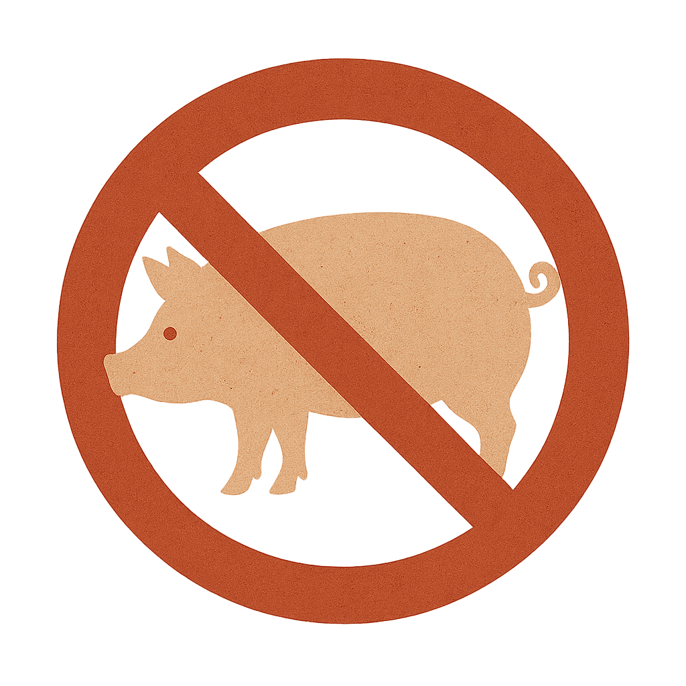

Why Is Pork Forbidden?

1. Health Concerns
Pork can carry parasites and diseases, and is often considered one of the least hygienic meats.
2. Religious Prohibition
The Qur’an explicitly forbids the consumption of pork in multiple verses (e.g., 2:173, 5:3).
3. Ethical Considerations
Islam promotes purity and conscious consumption, which aligns with avoiding animals considered impure.